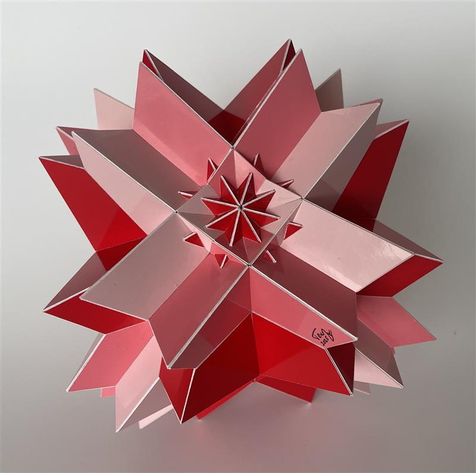

Compound of Twenty Tetrahedra

This is a uniform compound of twelve tetrahedra with the same symmetry as a cube. Each tetrahedron shares one 2-fold axis with a 4-fold axis of the compound. A cube has three 4-fold axes and this means that 4 tetrahedra share their 2-fold axis with each other. These four can actually be organised into two Stella Octangulae and the shared axis is 4-fold axis in the Stella Octagula. In the model above the four tetrahedra that share their 2-fold axis with each other have the same colour.
This is a compound with rotational freedom, which means that it is possible to rotate each tetrahedron around the above mentioned axis to obtain another compound that has the same symmetry and is still uniform. Even after rotating the compound consists of 6 Stella Octangulae and when you rotate the tetrahedra the two oactangulae sharing a 4 fold axis will rotate in opposite directions. On this page you can play with the rotation under section "Compounds with Rotational Freedom and Cube Based Symmetries".
For the model shown on this page it holds that the rotation angles between the four tetrahedra sharing an 2-fold axis are the same and the four edges orthogonal to the axis meet at an angle of 45 degrees. This means that for this model a compound of four tetrahedra with the same colour has a higher order symmetry than for another valid angle.
This model has a diameter of around 20 cm in, which is a bit less than 8 inches. It took me a two months to build this model and it was finished in Februari 2025.
Links
- Thumbnails
- Page with interactive models of compounds of Tetrahedra
- My Polyhedra Page
- Home
Last Updated
2025-08-19